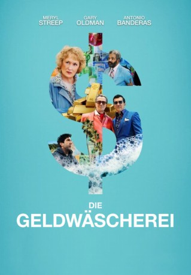
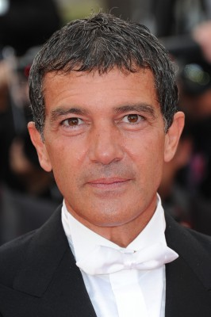
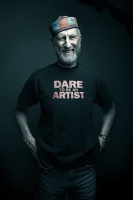
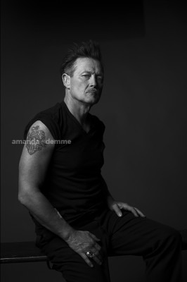
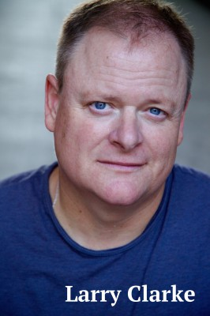
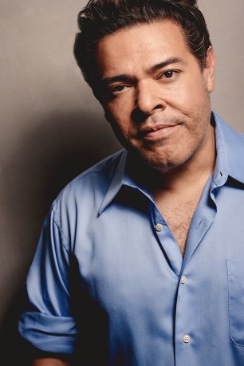
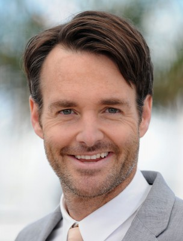
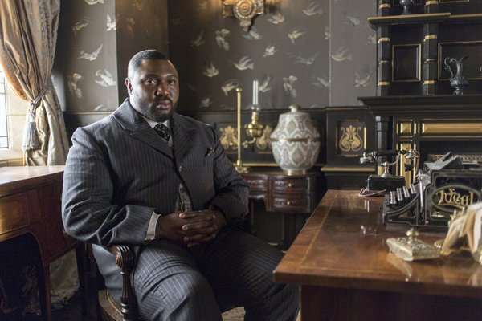
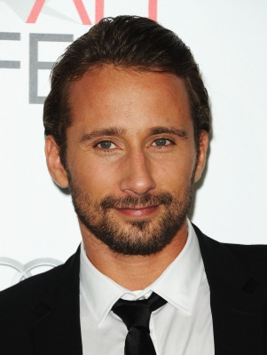
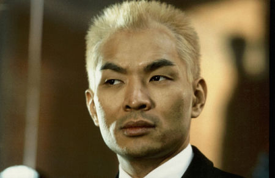

#11936 Die Geldwäscherei
Alternativ: The Laundromat (Englischer Titel)
 
 IMDB-Wertung: 6.3 / 10
IMDB-Wertung: 6.3 / 10  Tomatometer: 41
Tomatometer: 41  Metascore: 57
Metascore: 57 
Die Witwe Ellen Martin (Meryl Streep) untersucht einen Versicherungsbetrug. Ihre Spur führt zu einer Firma zweier Juristen in Panama City, Jürgen Mossack (Gary Oldman) und Ramón Fonseca (Antonio Banderas), die einen großangelegten Finanzbetrug betreiben. Mithilfe von Offshore-Finanzplätzen und Briefkastengesellschaften erschleichen sie für ihre mächtigen, reichen und in vielen Fällen prominenten Kunden noch mehr Reichtum. Ellen muss erkennen, dass ihre ursprüngliche Entdeckung nur die Spitze des Eisbergs ist. Stephen Soderberghs Film über die Panama Papers, basierend auf Jake Bernsteins Sachbuch „Secrecy World“.
Jahr: 2019
Dauer: 96 Minuten
FSK: 12
Land: USA Studio: NetflixTonspuren: - , - , - , - , - ,
Untertitel: Deutsch, Englisch,
Auflösung: 1080p (1920x1080) Größe: 4986 MB
Genre: Drama, Komödie, Krimi, Geschichte
Regisseur:  Steven Soderbergh
Steven Soderbergh
Drehbuch: Jake Bernstein, Scott Z. Burns
Soundtrack: David Holmes
Darsteller:
- Gary Oldman als Jürgen Mossack
-  Antonio Banderas als Ramón Fonseca
- AJ Meijer als Hominid #1
- Arsenio Castellanos als Hominid #2
- Lucy Morningstar als Hominid #3
 Meryl Streep als Ellen Martin
Meryl Streep als Ellen Martin-  James Cromwell als Joe Martin
- Jeff Michalski als Norm Sidley
- Jane Morris als Barb Sidley
-  Robert Patrick als Captain Paris
- Chris McLaughlin als First Mate
- Jay Paulson als Pastor Conners
- Melissa Rauch als Melanie
- Juliet Donenfeld als Thalia
- Brock Brenner als Kaylen
-  Larry Clarke als Ellen's Lawyer
- David Schwimmer als Matthew Quirk
- Marsha Stephanie Blake als Vincelle Boncamper
 Jeffrey Wright als Malchus Irvin Boncamper
Jeffrey Wright als Malchus Irvin Boncamper- Sharon Stone als Hannah
- Daniyar als Sergei
- Alexander Stasko als Felix
- Amy Louise Pemberton als Friend of Sergei and Felix
- Cristela Alonzo als Special Agent Kilmer
- Myron Parker Wright als Richard Boncamper
- Miriam A. Hyman als Edith Boncamper
- Veronica Osorio als Mr. Mossack's Secretary
- Brenda Zamora als Mia Beltran
- Zandy Hartig als Journalist
- Nicholas Barrera als Bus Passenger
- Fernando Martinez als Bus Driver
- Melinna Bobadilla als Mossack Fonseca Employee #1
-  Frank Gallegos als Father Héctor Gallego
- Christian De León als Young Ramón
-  Will Forte als Doomed Gringo #1
- Chris Parnell als Doomed Gringo #2
- Gabriel 'G-Rod' Rodriguez als Sinaloa Cartel Leader
-  Nonso Anozie als Charles
- Miracle Washington als Astrid
- Jessica Allain als Simone
- Jonah Gould als Event Planner
- Larry Wilmore als Jeff
- Nikki Amuka-Bird als Miranda
-  Matthias Schoenaerts als Maywood
- Rosalind Chao als Gu Kailai
- Kunjue Li als Gu's Aide
-  Ming Lo als Chief Wang Lijun
- Jesse Wang als Bo Xilai
- Brian Yang als Arresting Officer #1
- James Hsu als Arresting Officer #2
Datei: X:\2019(G-M)\Geldwäscherei, Die (2019, FSK12, 1920x1080).mkv seit 26.10.2019
Festplatte: HD 2018(G-Z)-2019(A-Z)
 Es gibt insgesamt 47 Filme in der Gruppe '2019(G-M)'
Es gibt insgesamt 47 Filme in der Gruppe '2019(G-M)'